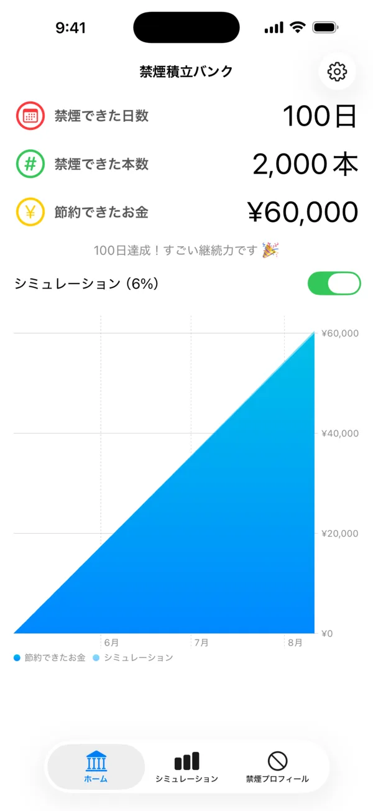
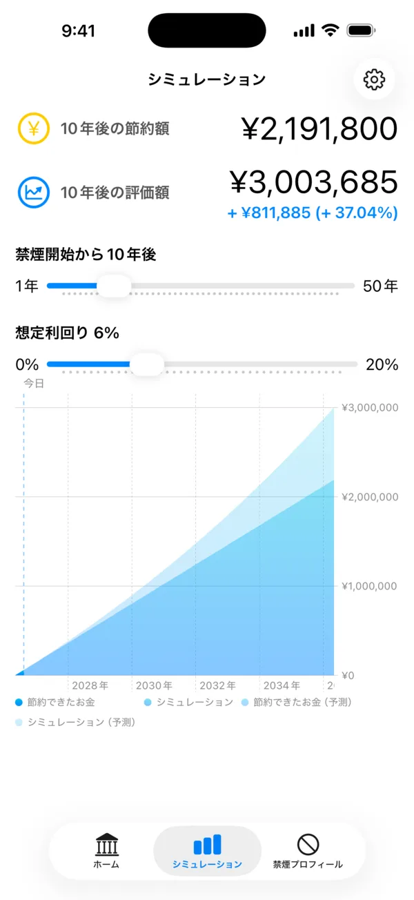
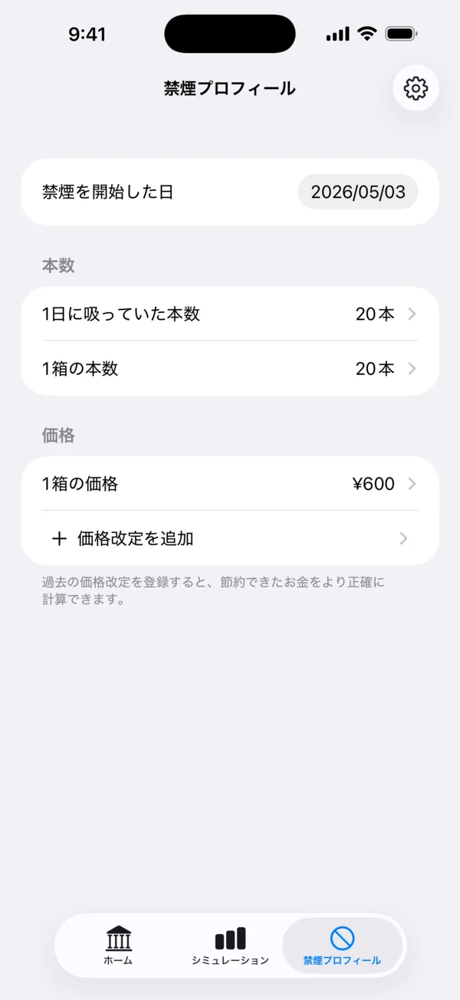
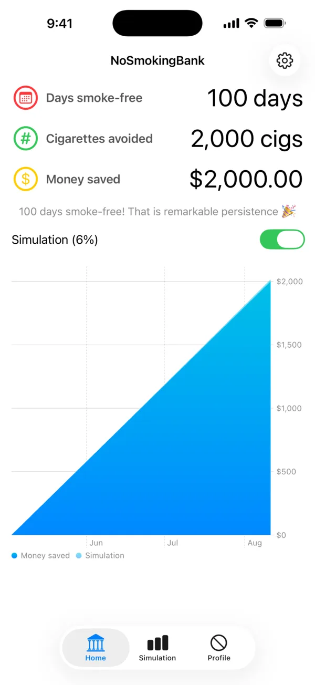
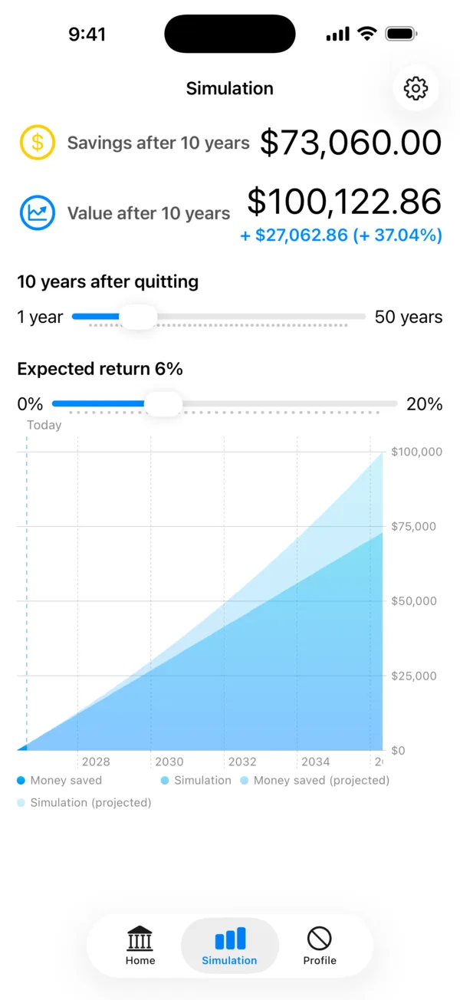
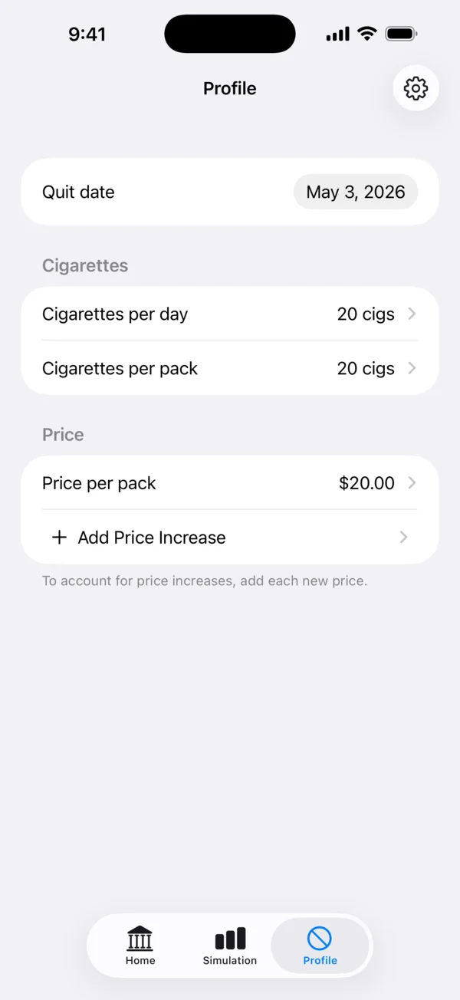

禁煙積立バンクNoSmokingBank
たばこ代を貯金と投資で見える化Quit smoking, grow savings
禁煙で浮いたたばこ代を、毎日そのまま積み立て。もし投資に回していたらいくらになっていたかも、同じグラフで確かめられます。値上げにも対応し、節目には通知でお知らせします。 Bank the cigarette money you no longer spend, every single day. See what it would be worth if you had invested it instead, right on the same chart.
App Store で見るView on the App StoreiPhone・iPad 対応 / 無料iPhone and iPad / Free






できることFeatures
節約できたお金がグラフで伸びていくWatch your savings climb
禁煙を始めた日・1日に吸っていた本数・1箱の価格を入れるだけ。あとはアプリが毎日の節約額を計算して、累積のグラフを描きます。日数・吸わずに済んだ本数・節約できたお金がひと目で分かります。 Enter the day you quit, how many cigarettes you smoked per day, and the price of a pack. From there the app works out what you save each day and draws the running total, alongside your smoke-free days and the cigarettes you never smoked.
「もし投資に回していたら」を重ねて表示See what investing it would have been worth
節約できたお金を、そのまま毎日インデックス投資に回していたら今いくらになっていたか。想定利回りを設定すると、貯金額と投資評価額を同じグラフに重ねて表示します。 What if that money had gone into index funds day by day instead? Set an expected annual return and the app overlays the portfolio value on the very same chart as your savings.
この先どうなるかをシミュレーションSimulate where this is heading
今のペースを1年後から50年後まで延長したら、資産はいくらになるのか。期間と想定利回りをスライダーで動かして、未来の自分の資産を確かめられます。 Stretch your current pace out from one year to fifty. Move the sliders for the time horizon and the expected return, and see the assets your future self could be holding.
たばこの値上げにも対応Built for price increases
価格改定日と新しい価格を登録すれば、値上げをまたいだ期間も正しく計算します。長く続けるほど効いてくる部分です。 Record the date and the new price whenever cigarettes go up, and the periods on either side are still calculated correctly. The longer you keep going, the more this matters.
節目には通知でお知らせNotifications at every milestone
禁煙1日・3日・1週間・1ヶ月……といった日数の節目や、節約金額の節目に達したときに通知が届きます。通知は設定画面からいつでもオフにできます。 Get a notification when you hit a milestone, whether it's days smoke-free — day 1, day 3, one week, one month and beyond — or an amount of money saved. Turn them off any time from Settings.
データはあなたの端末と iCloud の中だけにYour data stays on your device and in your iCloud
入力したデータが開発者のサーバーに送られることはありません。iCloud を通じて、同じ Apple Account の iPhone・iPad の間でのみ同期します。 Nothing you enter is sent to a developer-run server. It syncs through iCloud between your own iPhone and iPad signed in to the same Apple Account.
禁煙は我慢ではなく、積立です。
今日から貯め始めましょう。
Quitting isn't going without. It's putting away.
Start banking today.